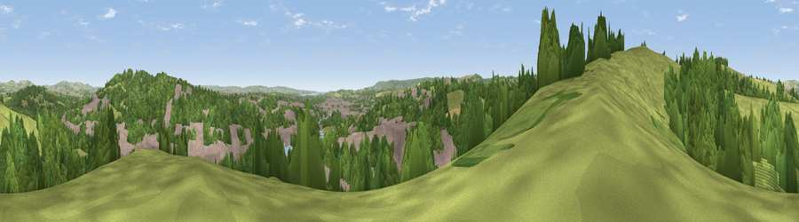

Viewpoint near Nadderwater
#21193 in England · top 40% of its area beats it · near Nadderwater · access?Where it is
The exact computed spot (SX 90375 94025). Click the marker for map links.
Public access: no public right of way or access land is recorded at this exact spot — it may be on private land. Computed from Natural England's CRoW access layer and OpenStreetMap rights of way — not the legal definitive map. Always verify locally.
The view, rendered

A 360° render of this exact spot computed from the terrain model, tree cover and land cover — summer colours, afternoon light, calibrated against photographs of famous viewpoints. Real trees, hedges and buildings will differ in detail.
The panorama
Grey silhouette: terrain skyline in each direction (720 bearings, Earth curvature and refraction included). Dashed green: skyline with trees (+15 m) and buildings (+8 m) as obstacles. Blue strip: how far the ground is visible on each bearing.
Where the view opens
Wedge length = distance to the farthest visible ground on that bearing (vegetation-aware). Rings at 10, 25 and 50 km.
What fills the view
42% woodland · 34% grassland · 20% built-up · 3% cropland ·
Angular shares of the visible panorama (visual magnitude), not map area. Landscape diversity 0.53 (0–1 Shannon).
Key numbers
More beautiful places nearby
The staircase of upgrades: each row has a higher view potential than everything closer. Driving times are estimates from straight-line distance, calibrated against real road routing — check an actual route before setting out.
| Place | Direction | Drive | Score |
|---|---|---|---|
| Viewpoint near Cowley | NW · 1 km | ~4 min | 68.9 |
| Viewpoint near Cowley | NE · 2 km | ~6 min | 69.8 |
| Viewpoint near Whitestone | WNW · 3 km | ~7 min | 73.9 |
| Viewpoint near Whitestone | W · 4 km | ~9 min | 79.8 |
| Viewpoint near Kenn | S · 10 km | ~20 min | 80.0 |
| Viewpoint near Kenton | S · 13 km | ~24 min | 80.7 |
| Viewpoint near Kenton | S · 13 km | ~25 min | 82.9 |
| Viewpoint near Holcombe | S · 19 km | ~33 min | 83.3 |
50.73546, -3.55483 · source: screening · position refined by local search. Computed location — check access rights before visiting.